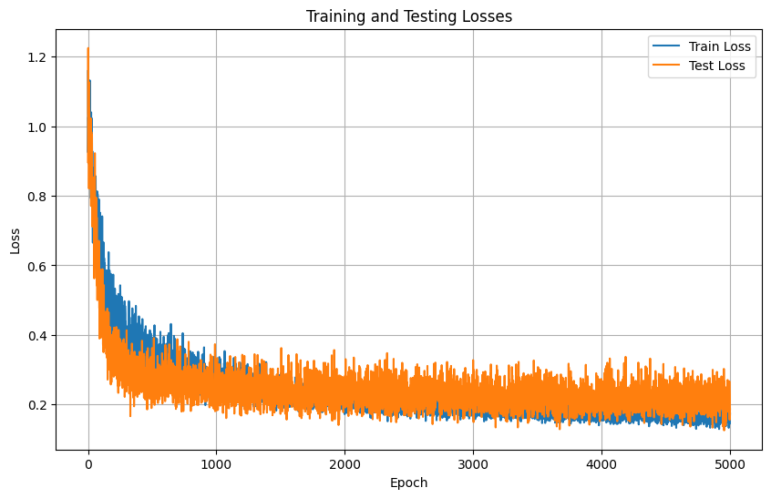

Development imputing
[1]:
import pandas as pd
from blocksnet.enums import LandUse
blocks = pd.read_pickle('blocks.pickle')
for lu in LandUse:
blocks[lu.value] = blocks[lu.value].clip(lower=0, upper=1)
blocks = blocks[blocks.area > 0]
[2]:
from blocksnet.relations import generate_adjacency_graph
graph = generate_adjacency_graph(blocks, 10)
2025-07-15 21:46:51.883 | INFO | blocksnet.relations.adjacency.core:_generate_adjacency_nodes:9 - Generating nodes
2025-07-15 21:46:51.888 | INFO | blocksnet.relations.adjacency.core:_generate_adjacency_edges:14 - Generating edges
2025-07-15 21:46:54.727 | SUCCESS | blocksnet.relations.adjacency.core:generate_adjacency_graph:37 - Adjacency graph successfully generated: 9312 nodes, 30110 edges
[3]:
import torch
import torch.nn as nn
from torch_geometric.nn import GraphSAGE
class MultiScaleGNN(nn.Module):
def __init__(self, input_size: int, output_size: int, hidden_dim: int = 128,
num_layers: int = 2, dropout: float = 0.2):
super().__init__()
self.output_size = output_size
self.graphsage = GraphSAGE(
in_channels=input_size,
hidden_channels=hidden_dim,
num_layers=num_layers,
out_channels=hidden_dim,
dropout=dropout,
act='relu',
norm=nn.LayerNorm(hidden_dim),
jk='cat'
)
self.output_layer = nn.Sequential(
nn.Linear(hidden_dim, hidden_dim // 4),
nn.ReLU(),
nn.Dropout(dropout),
nn.Linear(hidden_dim // 4, output_size)
)
def forward(self, x: torch.Tensor, edge_index: torch.Tensor, *args, **kwargs):
features = self.graphsage(x, edge_index)
output = self.output_layer(features)
return output
[4]:
from sklearn.preprocessing import StandardScaler
from blocksnet.machine_learning.strategy.torch import TorchGraphImputationStrategy
strategy_params = {
'hidden_dim': 128,
'num_layers': 2,
'dropout': 0.2,
}
strategy = TorchGraphImputationStrategy(
MultiScaleGNN,
strategy_params,
scalers={'x': StandardScaler(), 'y': StandardScaler()}
)
[5]:
from blocksnet.preprocessing.imputing import DevelopmentImputer
imputer = DevelopmentImputer(strategy)
Train
[6]:
train_params = {
'epochs': 5000,
'optimizer_params': {
"lr": 1e-4,
"weight_decay": 1e-4
},
}
train_losses, test_losses = imputer.train(blocks, graph, train_params=train_params)
Train loss: 0.17307 | Test loss: 0.18692: 100%|██████████| 5000/5000 [00:58<00:00, 85.36it/s]
[7]:
import matplotlib.pyplot as plt
plt.figure(figsize=(10, 6))
plt.plot(train_losses, label='Train Loss')
plt.plot(test_losses, label='Test Loss')
plt.xlabel('Epoch')
plt.ylabel('Loss')
plt.title('Training and Testing Losses')
plt.legend()
plt.grid(True)
plt.show()

Validate
Predict
[8]:
block_id = 1217
neighbors = list(graph.neighbors(block_id))
land_use = LandUse.RESIDENTIAL
neighbors
[8]:
[291, 292, 7315, 1172, 4998, 7312, 7316, 4999, 7313]
[9]:
blocks.loc[block_id, ['build_floor_area', 'footprint_area', 'living_area']]
[9]:
build_floor_area 85184.078863
footprint_area 21291.979269
living_area 39861.840942
Name: 1217, dtype: object
[15]:
tmp = blocks.copy()
for lu in LandUse:
tmp.loc[block_id, lu.value] = 0
tmp.loc[block_id, land_use.value] = 1
# for neighbor in neighbors:
# tmp.loc[neighbor, ['build_floor_area', 'footprint_area', 'living_area']] = 0
[16]:
tmp.loc[block_id, ['build_floor_area', 'footprint_area', 'living_area']] = imputer.run(tmp, graph, [block_id]).loc[block_id]
tmp.loc[block_id, ['build_floor_area', 'footprint_area', 'living_area']]
[16]:
build_floor_area 87589.210938
footprint_area 22851.820312
living_area 40249.480469
Name: 1217, dtype: object